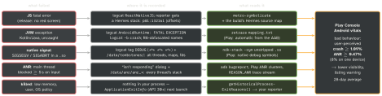

react-native · folio
In one line: An RN app on Android fails in five ways — fatal JS error, JVM
exception, native signal in a .so, ANR (main thread blocked 5 s
on input), silent kill. Each leaves a different record read by a different tool.
Download PDF Print view LaTeX source


ANR — what triggers it (exact)
- Input dispatch: no response to a key/touch within 5 s.
- BroadcastReceiver not finished in time — 5 s with a foreground activity.
startForegroundService()withoutstartForeground()within 5 s.- Service
onCreate/onStartCommand/onBindand JobServiceonStartJob/onStopJob: “a few seconds” (job ANRs are reported to the app only when targeting Android 14+). - Causes: I/O or heavy work on main, deadlocks, slow
onReceive(), binder calls.
The RN angle
- ANRs are about the main (UI) thread. A busy JS thread freezes your React UI but the main thread still consumes input — usually no ANR, so it hides from vitals: measure JS stalls yourself (
longtaskobserver). - Typical RN ANRs: SDK init in
MainApplication.onCreate, a native module doing I/O on the UI thread, main blocked on a lock another thread holds. - Native crashes in RN often sit in
libhermes.so/libreactnative.so(merged lib since 0.76) — the cause is often a native module misuse higher up. A fatal JS error in release surfaces as a JVM crash (JavascriptException(unverified)) carrying the JS stack.
Diagnose
- StrictMode (debug): flags disk/network on main before users see an ANR.
- Traces:
/data/anr/anr_*(wastraces.txt); no root?adb bugreport. - ApplicationExitInfo (API 30):
REASON_ANR,REASON_CRASH,REASON_CRASH_NATIVE,REASON_LOW_MEMORY…;getTraceInputStream()= the ANR trace, or the tombstone as protobuf. - Tombstones: logcat
DEBUG= signal, fault address, registers, backtrace; the file adds every thread, maps, fds. Written bycrash_dumpsince 8.0 (debuggerdbefore). SIGSEGV = bad memory access; SIGABRT =abort()(assert, uncaught C++ exception). - R8:
retrace+ that build’smapping.txt(AAB + AGP 4.1+: Play takes it itself). Native:ndk { debugSymbolLevel 'SYMBOL_TABLE' }or'FULL'.
Example — commands + in-app capture
# one app only, crash buffer, JS + crash tags
adb logcat --pid=$(adb shell pidof -s com.example.app)
adb logcat -b crash -d
adb logcat ReactNativeJS:V AndroidRuntime:E DEBUG:V *:S
adb bugreport ./bug.zip # ANR traces, tombstones
adb logcat -d | $NDK/ndk-stack -sym \
app/build/intermediates/cxx/RelWithDebInfo/<hash>/obj/arm64-v8a
retrace mapping.txt stack.txt # R8, per build// next launch: why did the last process die?
val am = getSystemService(ActivityManager::class.java)
am.getHistoricalProcessExitReasons(packageName, 0, 5)
.filter { it.reason == ApplicationExitInfo.REASON_ANR }
.forEach { i -> i.traceInputStream?.use { upload(it) } }
// debug builds: catch main-thread I/O early
if (BuildConfig.DEBUG) StrictMode.setThreadPolicy(
StrictMode.ThreadPolicy.Builder().detectDiskReads()
.detectDiskWrites().detectNetwork().penaltyLog().build())Logcat essentials
- Filter spec
TAG:LEVEL(V D I W E F S),*:Ssilences the rest;--pidscopes to one process;-b crash= crash buffer;-ddump and exit;-cclear. A new PID after a crash = the process restarted — re-runpidof. - Paste a tombstone to
ndk-stackwith its first*** *** ***line, or it finds nothing.
Traps
- “Move it to a coroutine” when main is waiting on that coroutine (
runBlocking) — still an ANR, and a deadlock risk. - Symbolicating with the wrong build’s
.so/mapping — the build ID must match; output looks plausible and is wrong. - Not every ANR has a stack in your code: the main thread may be idle in
nativePollOncewhen the trace is taken (the block already ended).
Remember
Five failures, five records: ReactNativeJS · AndroidRuntime · DEBUG/tombstone · /data/anr · ApplicationExitInfo.